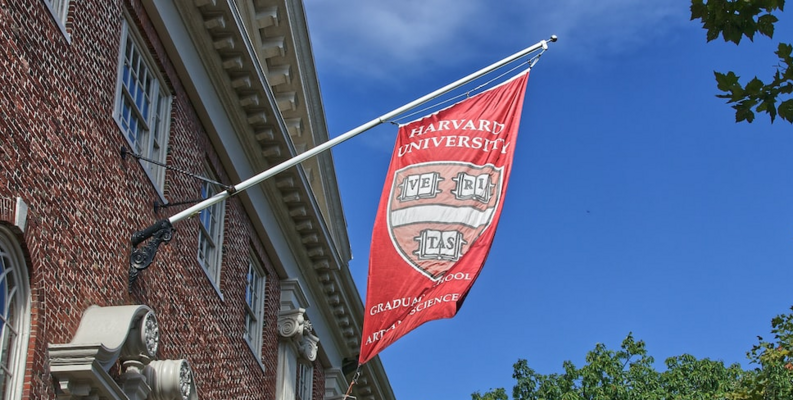
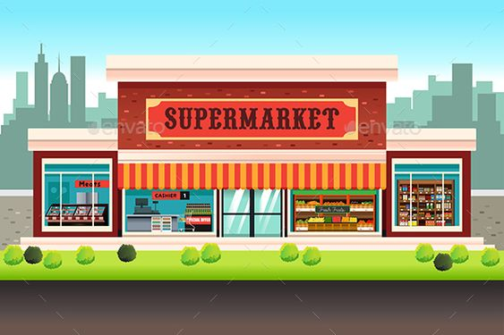
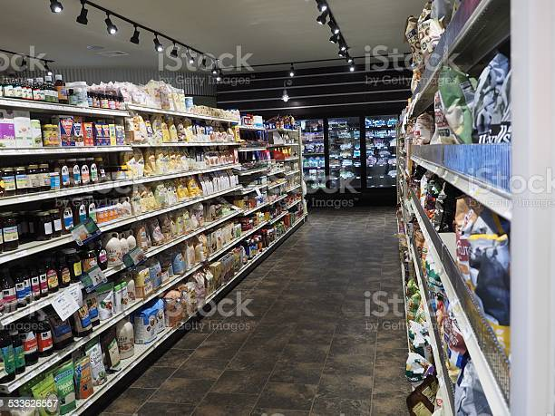

September 27, 2022
This is a data analysis case study for the Google Data Analytics course. The essence of this project is to perform a real-world task of a junior data analyst. I am imagining that I am working for Bellabeat, a high-tech manufacturer of health-focused products for women which are specified around technology such as health and fitness trackers. The task of the case study is to answer key business questions and follow the steps of the data analysis process: ask, process, prepare, analyze, share and act. This was done using R
This analysis has to do with the dataset of employees in an organisation, which comprises the location, race, brithdate etc of the employees. The data cleaning and manipulation was perfomed using power bi and the presentation was done using power point.view presentation

This Project implements a Streamlit web application called the "National University Rank App." The app is designed to help high school students and prospective college applicants search for and explore information about universities in the United States. It provides various features and functionalities to assist users in making informed decisions about their higher education choices.view streamlit
This project is for a company that sells bicycles and accessories. The company has a sizable dataset about its clients, but the team doesn't know how to use it to optimize its marketing plan. To do this, data cleaning, data mining, data exploration, and data visualization were used. Excel was utilized for the data cleaning phase, whereas Power Bi was used for data modeling and visualization.

This is a SQL data cleaning project for Nashville housing, different SQL queries were utilized in this project.

This is an exploratory data analysis project with supermarket shop dataset. This project focuses on the use of power bi for analysis and also powerpoint was used for the visualisation of the supermarket dataset. The analysis entails data gathering, data cleaning, use of Dax formulas, insights and conclusions .

This project entails the monthly sales analysis for an imaginary company. Power bi was used for the analysis and visualisation of the sales dataset.